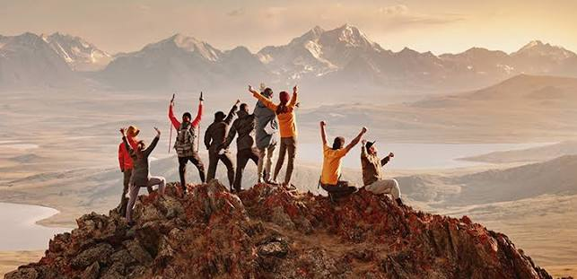

Welcome and enjoy your stay in Kenya
Kenya is a country in East Africa known for its diverse landscapes, wildlife,
and rich cultural heritage. From the savannahs of the Maasai Mara to the beaches
of the Indian Ocean, Kenya offers a wide range of experiences for travelers. Whether
you're interested in wildlife safaris, hiking, or exploring local culture, Kenya has something for everyone.
At dawn on the Maasai Mara plains, a Maasai giraffe stretches its neck toward
a thorny acacia tree. Its jagged, leaf-shaped spots blend into the golden morning
light while its long, dark tongue deftly strips green leaves from between the sharp
white thorns.
In the grassy clearing behind it, a plains zebra grazes peacefully, each
black-and-white stripe pattern as unique as a fingerprint. By staying close together on
the open savannah, the tall giraffe acts as a lookout above the treetops while the zebra
keeps watch below, sharing the quiet safety of the Kenyan morning before the heat of the day sets in.

| Contact Information | Details |
|---|---|
| Address: | P.O. Box 12345, Nairobi, Kenya |
| Phone: | +254 700 000 000 |
| Email: | info@kenya-tourism.com |